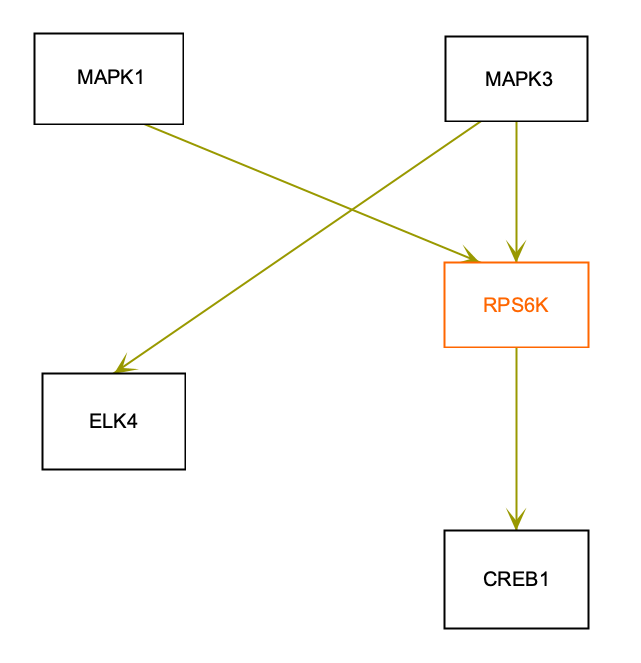

Background
Protein families are groups of evolutionarily related proteins, that have significant sequence similarity and similar three-dimensional structures. Often, these protein families have corresponding gene families as well. (Source: Wikipedia). In pathway models, it is sometimes useful to include single data nodes representing protein families.
Your Mission
In the figure below, the RPS6K data node represents the functional class of ribosomal protein S6 kinases. Your mission is to add the approppriate identifier from the InterPro database.
- To find the appropriate identifier to use, go to the InterPro website and in the Search by text tab, search for "ribosomal protein S6 kinase". The first result should be IPR016238, the InterPro entry for Ribosomal protein S6 kinase. Copy this identifier.
- Download the starter pathway here: draw-protein-families-start.gpml.
- Launch PathVisio and open the dowloaded file via File > Open.
- Select the RPS6K data node. Double-click to open the DataNode properties dialog.
- In the Identifier field, enter IPR016238.
- In the Database field, select InterPro.
- In the
Biological Type
field, switch to Protein. - Click Ok to exit the dialog.
- With the RPS6K node selected, note that the Backpage tab displays a linkout for the InterPro database.
- Save your work as a GPML file under File > Save As.
- Drag-and-drop the GPML file below to check if it is correct.